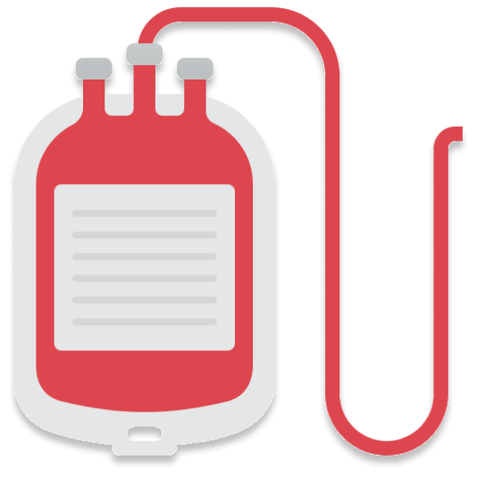
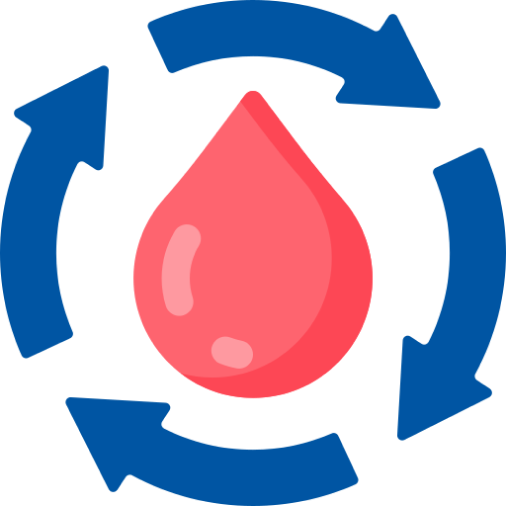

Lifeline
If you are a regular blood donor and want yourself to be visible to people in need, you're in the right place.

If you are a regular blood donor and want yourself to be visible to people in need, you're in the right place.
Connect With Donors Within Minutes
Become Visible To People In Need

Essentials At Your Doorstep.
Behind Lifeline

We make use of AI to detect if a donor is physically fit to donate, how much time of waiting is required before next donation.
We make use of AI to answer questions a user may have while using LifeLine.
Verified Donors are awarded a verification tag, showcasing their credibility on LifeLine.
Administrators keep monitoring site usage and handle submitted complaints promptly.